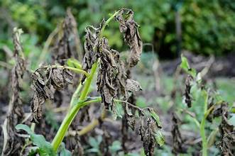
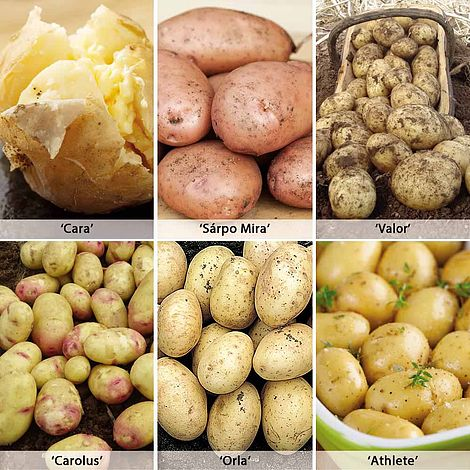
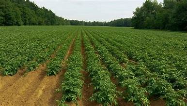
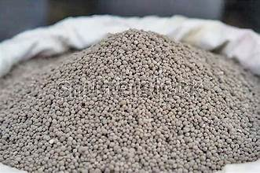
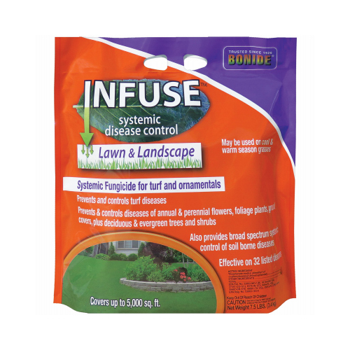

Late Blight Prevention and Pesticides

Prevention:
- Resistant Varieties: Choose potato varieties that are resistant to late blight.

- Proper Planting Time: Plant potatoes at the right time to avoid exposure to conditions favorable for late blight.
- Spacing: Plant potatoes with adequate spacing to promote air circulation and reduce humidity.

- Fertilization: Properly fertilize the plants to maintain their health and vigor.

- Fungicide Application: Apply fungicides for the prevention of late blight.
